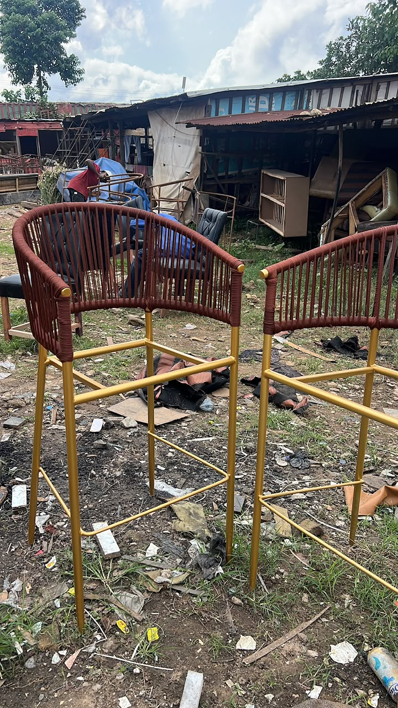
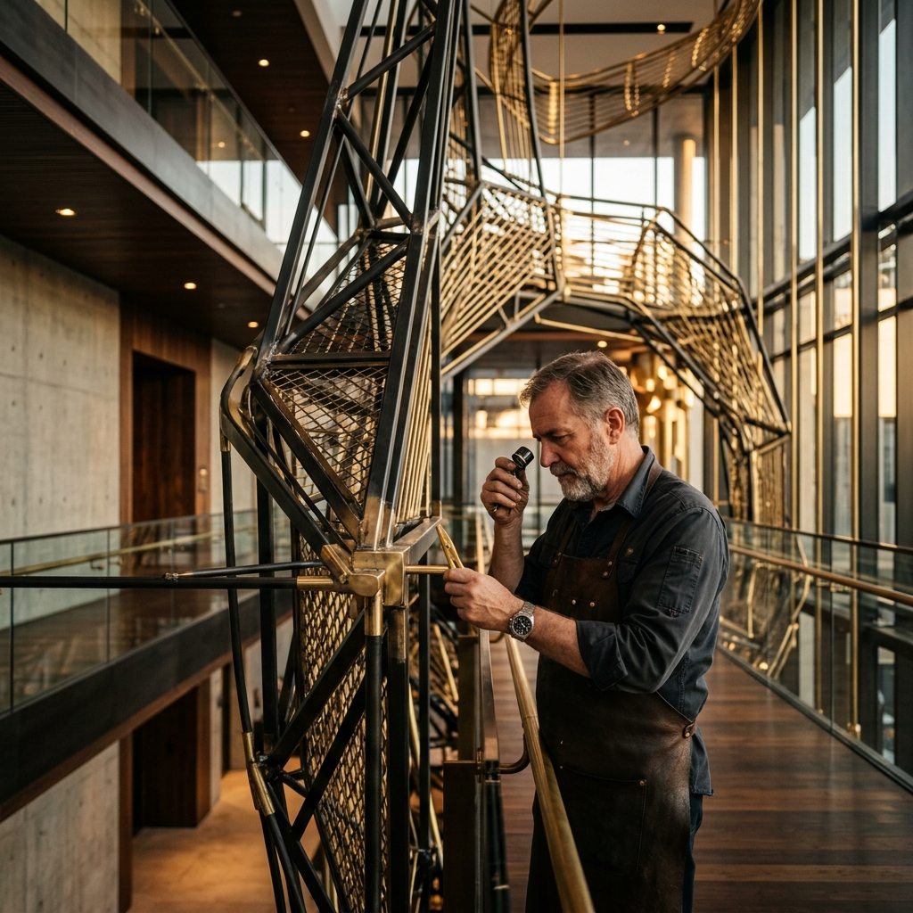
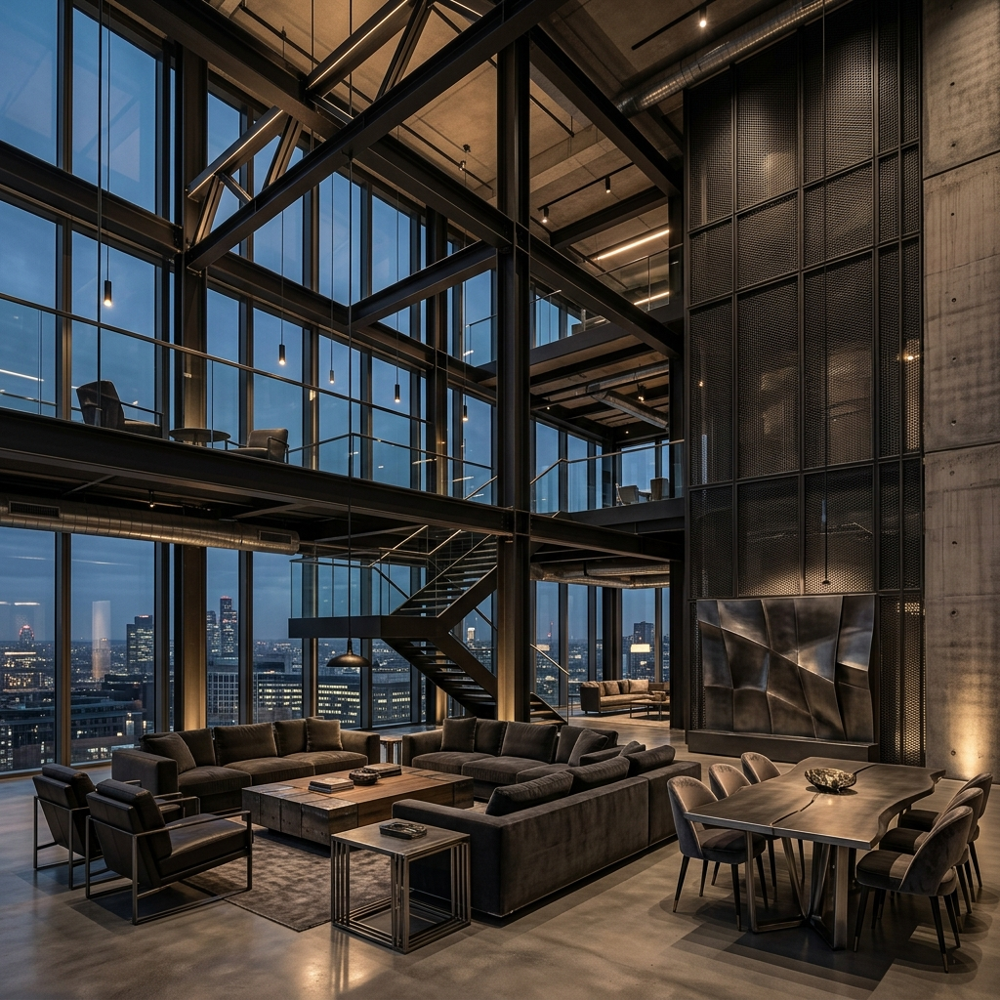
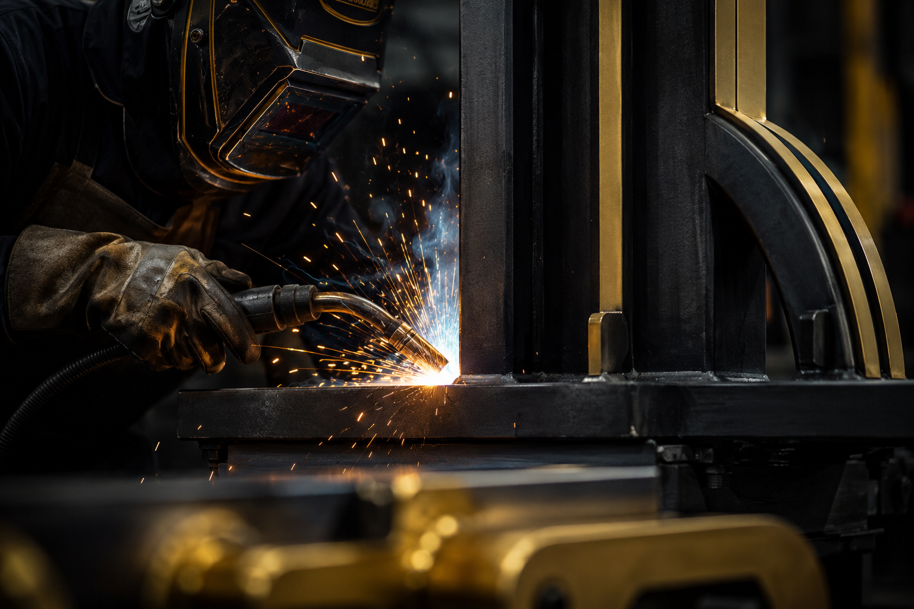
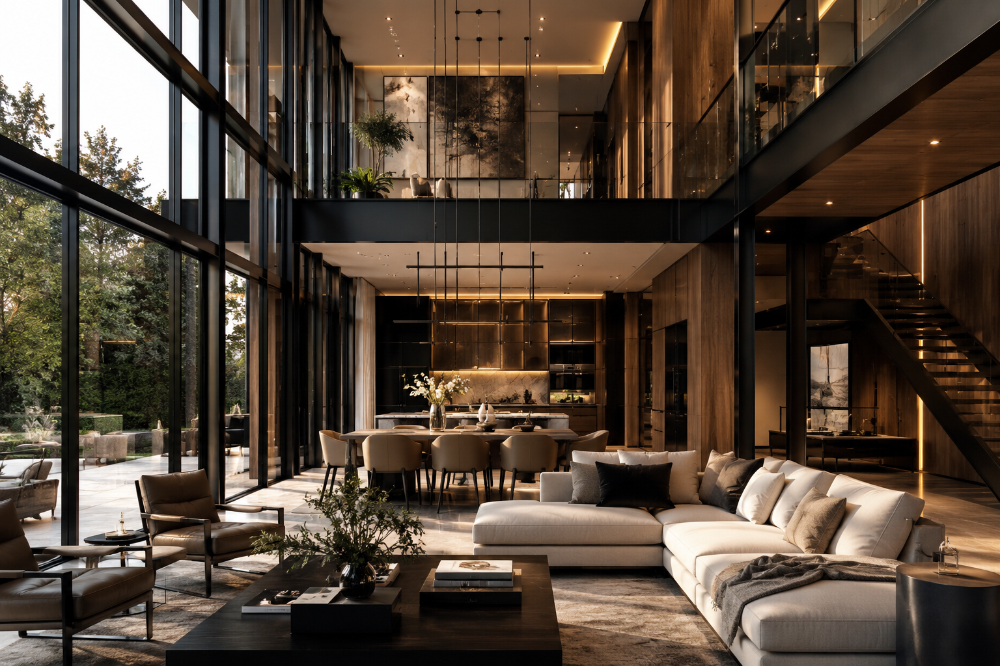
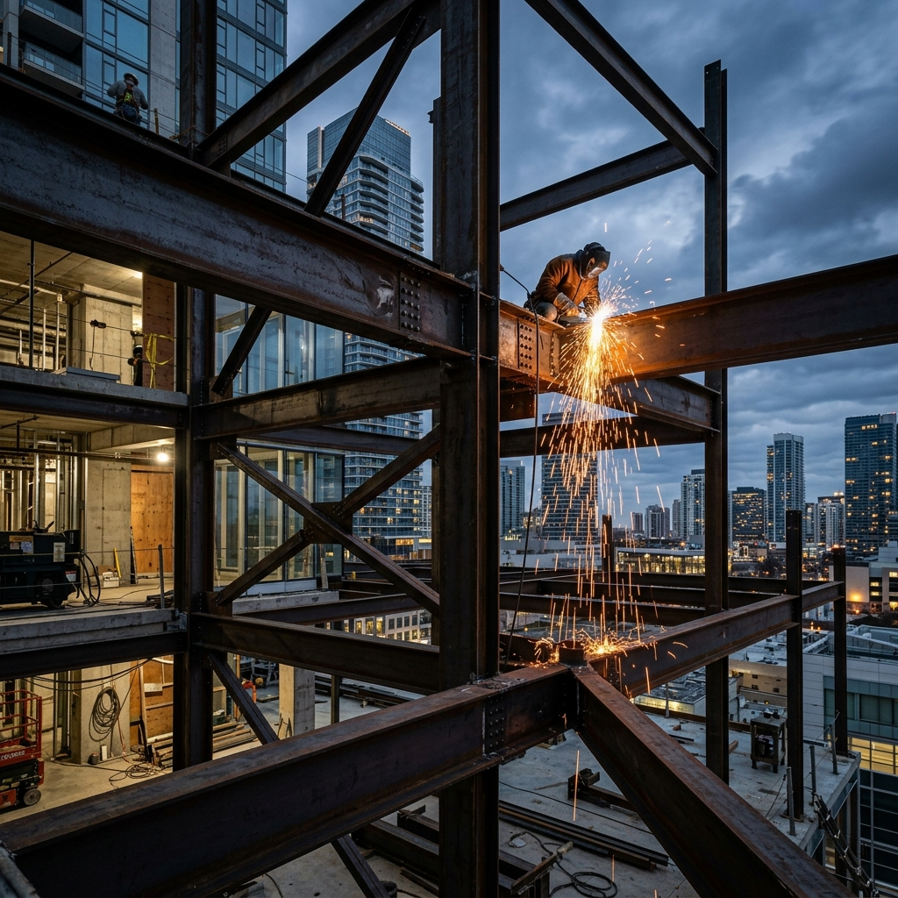

Crafting Strength.
Creating Spaces.
Building Lasting Impressions.
ATG Metal Works & Interiors brings metal craftsmanship and interior design together to create distinctive solutions for modern spaces. From carefully executed metalwork to thoughtfully designed interiors, our focus is on combining functionality, precision and visual appeal.

More Than Metalwork. A Commitment to Better Spaces.
ATG operates at the intersection of heavy structural metalcraft and delicate interior refinement. Rather than treating metal fabrication and interior styling as separate trades, we unite them under a singular architectural vision—where structural stability empowers aesthetic beauty, and thoughtful styling is reinforced by precision engineering.
Metal Works
We introduce structural metal craftsmanship, heavy fabrication, and architectural metal applications. From monumental pivot doors and motorized gates to sculptural staircases, structural steel frameworks, and laser-cut screens—engineered to endure and impress.
Interior Solutions
We curate thoughtful interior spaces, balancing spatial flow, light distribution, and tactile finishes. Our solutions incorporate bespoke timber joinery, custom architectural furniture, acoustic fluted panels, and executive fit-outs designed for human comfort and daily function.

Harmonizing Metals & Interiors
Combining heavy-duty engineering with artisanal joinery for luxury residential and commercial environments.
Where Precision Meets Design.
Every project is anchored in three foundational principles that guide our conceptual sketches, workshop fabrication, and on-site assembly.
Precision
Attention to structural tolerances, accurate site measurements, and deliberate execution. In bespoke metalwork and luxury joinery, millimeter precision is the foundation that guarantees smooth mechanical movement, perfect alignment, and enduring structural integrity.

Design
We champion the vital dialogue between visual elegance and practical functionality. Form never compromises utility; instead, thoughtful proportions, clean sightlines, and natural light optimization elevate the human experience of the space.
Craftsmanship
Engineering creates the geometry, but skilled hands impart soul. From continuous seamless weld grinding and hand-rubbed timber finishes to electrostatic powder seals, our dedication to surface finishing rewards both the eye and the touch.
Two Distinct Disciplines. One Cohesive Vision.
Explore how our metal fabrication facilities and bespoke interior design capabilities collaborate to deliver complete architectural solutions.
Metal Works & Fabrication
Functional architectural metalwork engineered for structural permanence, perimeter security, and striking visual statements. We work across high-tensile carbon steel, architectural brass, and corrosion-resistant aluminium alloys.

Interior Design & Solutions
Crafting considered environments where material richness meets everyday comfort. We synthesize fine natural timbers, hand-honed marble, smoked glass, and integrated indirect lighting into bespoke joinery and commercial fit-outs.

Understanding the Vision
Every project starts by understanding your exact spatial goals. We conduct detailed site measurements, review architectural drawings, and discuss functional needs, material preferences, and aesthetic aspirations.
Planning & Design
Our design team translates your requirements into comprehensive technical blueprints. We select structural steel profiles, calculate load factors, specify timber cuts and brass hardware, and confirm finish formulations.
Craftsmanship & Execution
In our workshop, skilled fabricators and joiners bring the plans into physical reality. Precision laser cutting, TIG/MIG welding, and fine carpentry come together with strict dimensional checks at every milestone.
Finishing & Delivery
Workpieces receive multi-coat protective finishes, from electrostatic powder coatings to hand-rubbed timber oils. Our installation specialists coordinate logistics and complete the on-site mounting with meticulous care.

Designed with Purpose. Made with Care.
“Every curve of steel, joint of timber, and custom finish is crafted with purpose. We believe that true luxury lies in the harmony between uncompromising structural strength and deliberate aesthetic restraint.”
Material Sincerity
We specify genuine structural metals, kiln-dried seasoned hardwoods, and certified finishes calibrated to withstand high humidity and prolonged exterior exposure.
Architectural Harmony
Our fabrications never compete with the architecture they serve. Each element is scaled, proportioned, and detailed to elevate the overall architectural narrative.
Disciplined Execution
From preliminary site measurements to handover, we maintain clear client communication, clean work areas, and unwavering respect for agreed project specifications.
Have a Project in Mind? Let’s Bring It to Life.
Explore our curated collection of architectural metalwork and bespoke interior concepts, or reach out directly to discuss tailoring an original design to your project requirements.